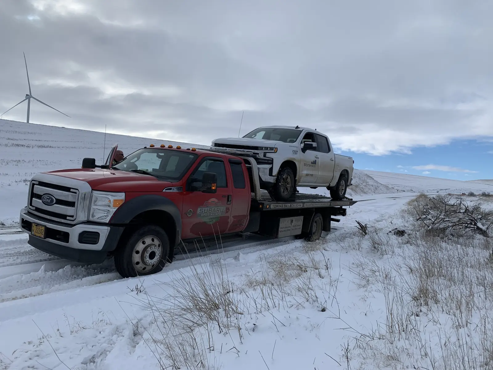
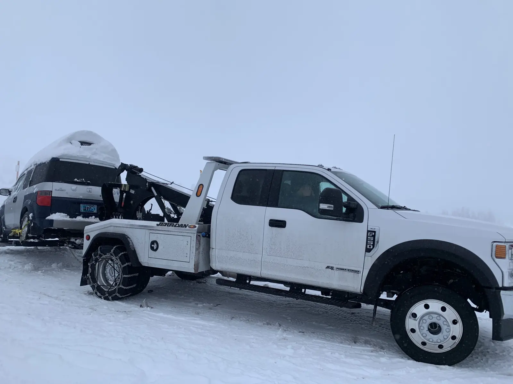
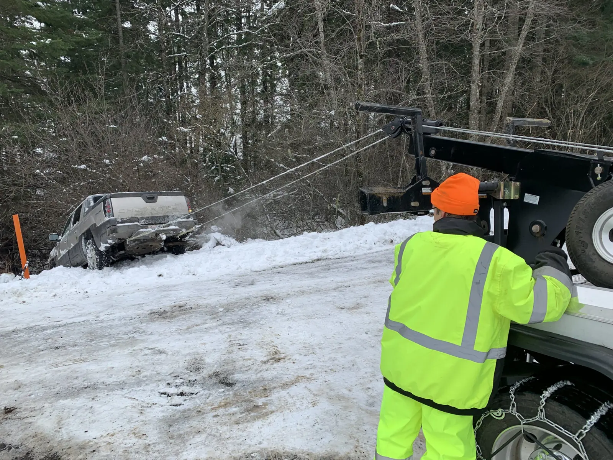

Subaru Specialists
Best trained mechanics in the Gorge, genuine original manufacturer parts, and 24/7 towing when you need it. Yes, we will work on other cars.
- Subaru specialists
- All Asian cars
- Genuine OEM parts
- 24/7 towing
Auto repair services

Subaru & Asian Car Repair
Subaru specialists. All Asian cars.
Learn more →
Diagnostics
Check engine lights and hard-to-find problems.
Learn more →
Oil Changes
Drop it off for 4 hours, no appointment needed.
Learn more →
Tires
Tire sales, repair and replacement.
Learn more →
Brakes
Pads, rotors, lines and brake inspections.
Learn more →
24/7 Towing
Towing, winch outs and recovery in bad weather.
Learn more →What customers say
Helpful and thoughtful! I made an appointment for a specific issue with my Subaru and they took the time to diagnosis it, call me and talk options for fixing it, and make the changes, all within a couple hours. Will definitely be back for any car needs.
This is my first google review. Green Tree Automotive deserves it. They performed the diagnostics quickly and fixed my issue, avoiding a $6500 dealership fix. From this I can deduce that they are honest and on top of things. Highly recommend.
A real old fashion "service station"! They are polite & professional and you just get the feeling they are going to be honest & fair... which they were. Highly recommend! Thanks guys!!
I was three hours into a 14 hour drive my car failed me just outside of Hood River. I feel like I struck gold with being stuck in Hood River and finding Greentree automotive.
They replaced a brake line and did a bleed. They did a professional job in a timely manner. They also charge a fair price!
Yet again, Greentree saves the day! A while ago my car broke down in Hood River and these guys saved my bacon in fixing my car, and I did not forget them.

Genuine parts, honest answers
We do such a high volume of genuine Subaru parts that we can sell them for less than our competitors, often less than others charge for cheap, after-market parts.
We often give you the option to buy genuine Subaru parts or, if appropriate, after-market parts. It's your choice. But you'll never pay for genuine Subaru parts and get inferior after-market parts. That's just not right.
Our loyal customers are our best advertising. Key drop boxes and envelopes are available for after-hours drop off.
What's going on with your car?
Tell us what your car is doing and we'll get back to you. Or call (541) 380-1428, Monday to Friday, 8am to 5pm. Need a tow? Call or text 541-806-5044 any time.
- (541) 380-1428
- 2043 12th St, Hood River, OR 97031 · right across from Point S Tires · Towing (541) 806-5044